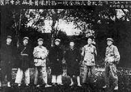
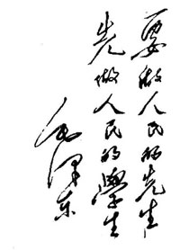
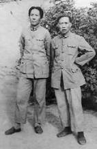
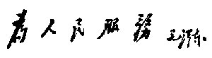
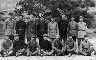
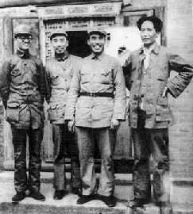
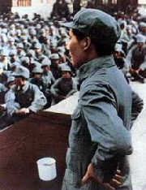
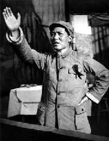
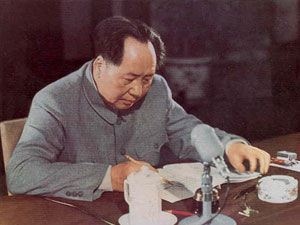

 |
1931年11月，中共苏区中央局成员在江西瑞金合影。左起：顾作霖、任弼时、朱德、邓发、项英、毛泽东、王稼祥。 |
1931年
1月7日，中共扩大的六届四中全会在上海举行，被选为中共中央政治局候补委员（未出席会议）。王明在共产国际代表扶持下进入中央政治局。
4月至5月，同朱德等指挥红一方面军粉碎国民党军第二次“围剿”。
7月至9月，粉碎国民党军第三次“围剿”。
11月1日至5日，在中央苏区党组织召开的第一次代表大会（赣南会议）上受到排挤，被指责为“狭隘的经验论”、“富农路线”和“极严重的一贯右倾机会主义”。
 |
为湖南省立第一师范学校
题词（1950年12月29日） |
11月，在中华苏维埃第一次全国代表大会上作报告；在中华苏维埃共和国中央执行委员会第一次会议上当选为主席和人民委员会主席。
1932年
1月，到江西瑞金城郊东华山古庙休养。
3月，红军攻打赣州失利后，停止休养，赶赴前线指挥。
4月15日，发表《对日战争宣言》。
5月9日，同项英发表《中华苏维埃共和国临时中央政府反对国民党出卖淞沪协定通电》。
6月，同朱德指挥红一、红五军团从闽西回师赣南。
10月，在江西宁都召开的中共苏区中央局会议上，受到“左”倾错误领导的打击。会后，被撤销红一方面军总政治委员职务，前往福建长汀养病。
 |
1936年，毛泽东和他青年时期的老师徐特立在保安。 |
1933年
1月下旬，中共临时中央政治局迁到中央革命根据地。
2月上旬，中共临时中央全面推行 “进攻路线”，清除毛泽东积极防御路线在中央根据地的影响，开展了所谓反“罗明路线”的斗争。
5月30日，同项英等发布中华苏维埃共和国临时中央政府《为国民党出卖平津宣言》。
6月1日，同项英等发布中华苏维埃共和国临时中央政府《关于查田运动的训令》。
8月，在瑞金召开的中央苏区南部十七县经济建设大会上作《粉碎五次“围剿”与苏维埃经济建设任务》的报告。
10月，写《怎样分析农村阶级》一文，成为划分农村阶级成分的标准。
11月，先后在兴国县长冈乡和上杭县才溪乡调查，写出《长冈乡调查》和《才溪乡调查》。
1934年
1月，在中共六届五中全会上被选为政治局委员。
同月，在中华苏维埃第二次全国代表大会上作工作报告。继续当选为中华苏维埃共和国中央执行委员会主席。
6月19日，同项英等发表《中华苏维埃共和国中央政府为国民党出卖华北宣言》。
7月15日，同项英等发表《为中国工农红军北上抗日宣言》。
10月18日，傍晚，带领警卫班离开于都城，踏上长征的路途。
11月底，湘江之战中红军遭受惨重损失。30日，随军委第一野战纵队渡过湘江。
12月12日，在湖南通道召开的中共中央负责人紧急会议上，力主红军放弃原定向湘西与红二、六军团会合的计划，改向敌人力量薄弱的贵州前进，被采纳。
1935年
1月15日至17日，出席在贵州遵义召开的中共中央政治局扩大会议，被增选为中央政治局常委。会议结束了王明“左”倾冒险主义在中共中央的统治，实际确立了以毛泽东为代表的新的中央领导。
3月，同周恩来、王稼祥组成三人军事指挥小组。
3月至5月，同周恩来等指挥红一方面军四渡赤水，巧渡金沙江，飞夺泸定桥，取得战略转移中具有决定意义的胜利。
 6月15日，同项英等发表《为反对日本并吞华北和蒋介石卖国宣》。
6月，率红一方面军同红四方面军在四川西部会合。不久，即同张国焘的逃跑主义、分裂主义进行斗争。
10月19日，率领中国工农红军陕甘支队到达陕西保安吴起镇。红军胜利完成长征。
12月，出席在陕北瓦窑堡召开的中共中央政治局会议。会议确定了建立抗日民族统一战线的策略。
12月27日，在党的活动分子会议上作《论反对日本帝国主义的策略》报告，阐发抗日民族统一战线的策略方针。
1936年
1月25日，同周恩来、彭德怀等二十位红军将领联名发出《为红军愿意同东北军联合抗日致东北军全体将士书》，提出关于组织国防政府和抗日联军的具体办法，建议互派代表共同协商。
2月至5月，同彭德怀率领红一方面军主力渡黄河东征。
 |
1936年，毛泽东同参加井冈山斗争的
部分负责干部在陕北合影。 |
3月，向南京当局提出停止内战、一致抗日的五点意见。
6月1日，同朱德发布关于救国救民的主张二十条。
6月12日，同朱德发布宣言，对“两广事变”表示支持，提出抗日救国的八项纲领。
7月至10月，在陕北保安多次会见美国记者斯诺，回答他提出的有关中国革命和工农红军等多方面的问题，并介绍了自己的经历。
8月10日，出席中共中央政治局会议，作关于国共两党关系和统一战线问题的报告。
8月25日，起草《中国共产党致中国国民党书》，呼吁一致抗日。
12月7日，任中共中央革命军事委员会主席。
12月中旬，张学良、杨虎城在西安实行“兵谏”，扣留蒋介石。毛泽东和中共中央分析当时错综复杂的政治形势，确定了和平解决西安事变的方针，并派周恩来等往西安参加谈判，促成事变和平解决。
12月，撰写《中国革命战争的战略问题》。
1937年
1月13日，同中共中央和中央军委进驻延安。
2月9日，出席中共中央政治局常委会议，会议讨论和通过《中共中央给中国国民党三中全会电》，提出五项国策、四项保证。这个文件实际成为国共合作谈判的纲领。
3月，会见美国记者史沫特莱，回答她对中日战争与西安事变提出的一些问题。
4月至7月，在抗日军政大学讲授辩证法唯物论，其中的两节后来整理成《实践论》和《矛盾论》。
5月，在中国共产党全国代表会议上作《中国共产党在抗日时期的任务》的报告和《为争取千百万群众进入抗日民族统一战线而斗争》的结论。
7月7日，卢沟桥事变爆发，全国抗日战争开始。
7月23日，发表《反对日本进攻的方针、办法和前途》，提出坚决抗战，反对妥协退让的方针、政策。
 |
1937年，毛泽东和朱德、周恩来、秦邦宪在延安。 |
8月22日至25日，出席在陕北洛川召开的中共中央政治局扩大会议，强调统一战线中的独立自主原则，阐明独立自主山地游击战的战略方针，任新组成的中共中央军事委员会书记。
8月25日，同朱德、周恩来联名发布关于红军改编为国民革命军第八路军的命令。随后，指导八路军开赴抗日前线。
11月12日，在延安党的活动分子会议上作《上海太原失陷以后抗日战争的形势和任务》的报告，全面阐述了对统一战线和国共关系的意见。
12月，出席中共中央政治局会议并发言，针对王明“一切经过统一战线”的右倾投降主义主张，重申和坚持了洛川会议确定的方针政策。
1938年
春，做出八路军从华北山地进入到平原地区开展游击战争的决策。
5月，发表《抗日游击战争的战略问题》一文。
5月26日至6月3日，在延安抗日战争研究会作《论持久战》讲演。全面分析中日战争所处的时代和中日双方的基本特点，批驳速胜论和亡国论，阐述了中国抗日战争的持久战的总方针。
9月14日至27日，出席中共中央政治局会议。王稼祥传达共产国际指示，说中共中央领导机关要以毛泽东为首解决统一领导问题。毛泽东在会上作长篇发言。
 |
1938年在抗大讲演 |
 |
1939年，毛泽东在抗大成立三周年纪念大会上讲话 |
9月29日至11月6日，出席中共扩大的六届六中全会，作《论新阶段》的政治报告和会议结论。会议批准以毛泽东为首的中央政治局的路线。
1939年
2月2日，在延安党政军生产动员大会上讲话，号召自己动手，克服经济困难。
2月5日，在中共中央党校作《反对投降主义》的讲话。
4月下旬，写《五四运动》一文。
5月4日，在延安青年纪念五四运动二十周年大会上作《青年运动的方向》的讲演。
7月至8月，多次作报告，谴责国民党顽固派制造反共磨擦，呼吁继续团结抗战。
9月16日，同中央社、《扫荡报》、《新民报》三记者谈话，重申对国民党顽固派制造反共磨擦采取“人不犯我，我不犯人；人若犯我，我必犯人”的自卫原则。
10月4日，发表《〈共产党人〉发刊词》，阐明统一战线、武装斗争、党的建设是中国革命克敌制胜的三大法宝。
12月1日，为中共中央起草关于大量吸收知识分子的决定。
12月21日，为八路军政治部、卫生部编印的《诺尔曼·白求恩纪念册》写《纪念白求恩》一文。
同月，与人合作撰写《中国革命和中国共产党》。
12月至次年3月，领导打退国民党顽固派第一次反共高潮。
1940年
1月，发表《新民主主义论》，系统论述新民主主义革命的理论和纲领。
3月6日，为中共中央起草关于抗日根据地政权问题的指示，提出实行“三三制”。
3月11日，作《目前抗日统一战线中的策略问题》的报告，总结打退第一次反共高潮的经验，提出“发展进步势力，争取中间势力，反对顽固势力”的策略思想和有理、有利、有节的原则。
 |
1954年1月，毛泽东主持起草
《中华人民共和国宪法》（草案） |
5月4日，起草中共中央致东南局和新四军的指示，强调必须放手扩大军队，抵抗反共顽固派的进攻，指出要采取斗争的方针，“应付可能的全国性的突然事变”。
6月下旬，在中共中央政治局会议上作报告，分析国际形势及对中国抗战的影响，指出：既要警惕国民党顽固派发动突然事变，又要力争时局好转。
11月，起草朱德、彭德怀、叶挺、项英复何应钦、白崇禧《皓电》的电报（《佳电》），明确驳斥《皓电》对八路军、新四军的无理指责。
12月，同从前线回来到中央党校学习的同志谈话，强调干部精通马克思列宁主义的重要性。 |